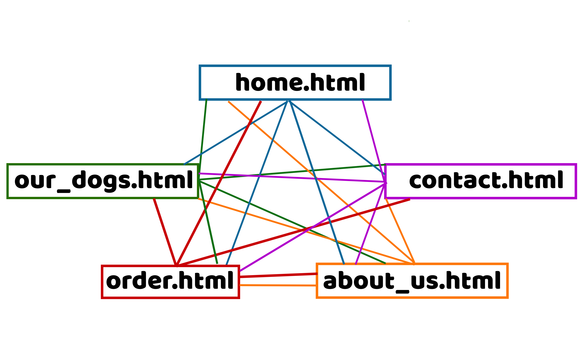
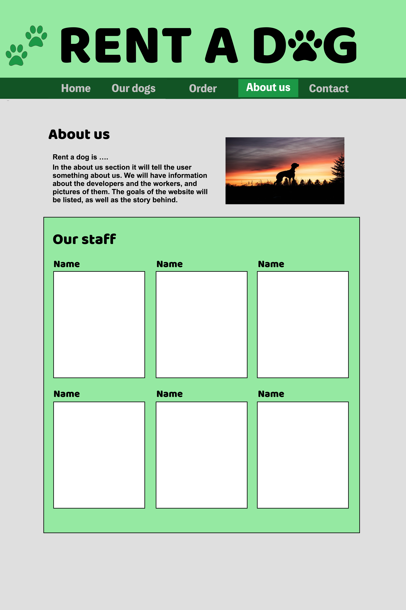
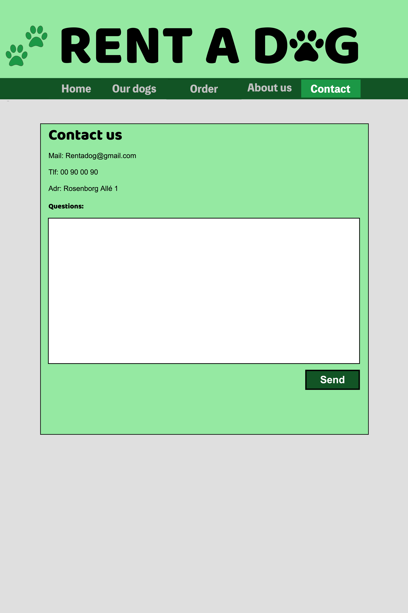
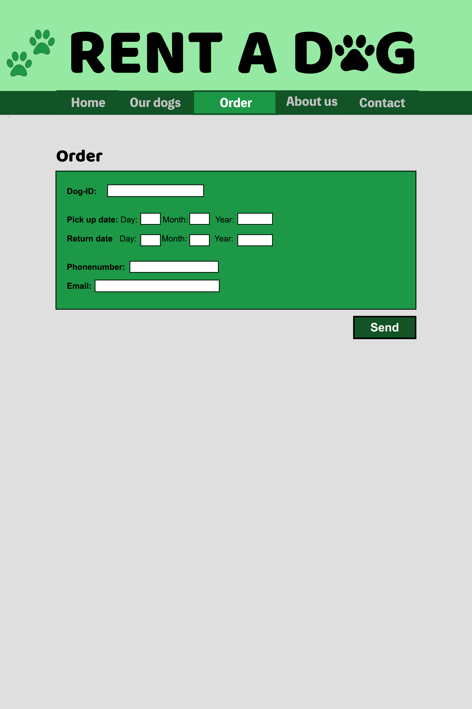

Text: Noah, Sander, Marcus, Morten, Sondre and Ove
Publisert:
Administrative Details
Client Name: Rentadog AS
Contact Person: Lars Kjøpmann
Website Name: Rent A Dog
Purpose, goals and audience
The purpose of "Rent a dog" is to give people who love dogs the opportunity to rent a dog for a certain period of time.
The way we will do it is that the website must have an overview of the dogs that can be rented and a clear overview of which dogs are available or rented out.
The overview should have lots of cute pictures and information about each individual dog to attract as many customers as possible.
The aim of "Rent a dog" is to have a turnover of 1 banana in the first quarter of 2023, while at the same time aim to become the largest provider of rentable dogs in Norway.
The audience of “rentadog” is everyone with a love for dogs. Does your kid want a dog? Rentadog is the perfect answer. Your kid will get the dog experience as many times as he likes, while you don’t have to care about the housing of the dog.
Are you in need of a date idea for a tinder match? With rentadog you can have a cute puppy at your disposal for a couple of hours. With a Labrador by your side, you will definitely get the girl of your dreams!
The answer is that rentadog is for everyone. The perfect match for a dog shelter with loads of food and housing, and people who are looking for a dog, don’t have enough time for a dog or just like to go for walks and want to help others. The audience for rentadog is huge.
One of Rentadog's dogs
Navigation Structure

The navigation structure of Rentadog’s website can be described as clique and is shown below.
When visiting a page, you can access every other page from there. Our reason for choosing this de
sign is to give the user an easy-to-use interface where you can find all the information you need.
This is possible because of the low number of pages Rentadog utilize without lacking content. Eac
h page has a very specific area of use and therefore requires its own spot on the navigation bar.
A simple setup like this makes Rentadog’s website an entry level website that even people with no co
mputer experience can use, which suits the audience.
Page Layout and Appearance
In coming up with the universal design, we wanted the dogs to be the center of attention.
The site will be simple and clean, without vivid colors. Considering the site will be relatively unknown to most users,
the homepage will contain basic information about our services. We will have a banner which clearly indicates our name
and a navigation bar with straightforward names. This will make the site user friendly and effortless to use for all a
udiences. The navigation bar will contain all our pages which clearly serves their own purpose. The “Our dogs” tab wil
l show pictures of various dogs of all sizes and will be useful for those interested in our selection of dogs. The “Ab
out us” tab will contain information about our company and our motivation. The “Contact” tab will have information abo
ut the company. The “Order” tab will make the users able to reserve our dogs in select time periods and provide their
information. We believe that this design will please our users.
The specific styling for the website that will apply to all pages can be found below:
Font:
“Baloo Bhaijann 2” for the main title (100pt) and headings (40pt).
"Arial" for the navigation bar (20pt) and paragraph (14pt)
Color scheme:
Text: Black
Background: Light grey rgb(211, 211, 211)
Body width: 960px
Links: The main title will be clickable and bring the users to the homepage aswell.
The navigation bar will contain links to the respective pages and the current page
will be a lighter color.
Navigation bar postion and appearence: The navbar will be included below the main title and will be a dark green color.
The text in the navbar will be white.
Banner: The banner will be “Rent a dog” written in “Baloo Bhaijann 2” as seen at the top of the mockup picture.
It will have a separate, light green, background color. Next to the title, there will be two dog paws in a darker green color.
The homepage will be the first page that will appear when users visit the website.
The purpose of the homepage is to draw in the visitor of the website by incentivizing further use.
The homepage will contain two sections. The first section will showcase the benefits using this specific website instead of the competitors.
As agreed upon with the client, the three benefits will be as follow: 1) fair prices, 2) quality dogs, and 3) no fuzz.
The second section will highlight three popular dogs. This will include a picture of the dog, its name and a characteristic.
Beneath the dog highlight, there will be a video illustrating the joy of having a dog.
Our Dogs-ourdogs.html
Our dogs content:
The purpose of this webpage is to show the catalogue of dogs in such a way that the user wants to rent a dog. As follows, the most
important element on the webpage is the grid containing the dog advertisements. This will be a grid with two columns and an indefi
nite number of rows depending on the number of available dogs at the specific time. Each advertisement shall include some basic inform
ation: the name, race, size and characteristic. On the left side of the webpage there will be a box with filter settings. For example, t
he user shall be able to filter on castrated/not castrated dogs and small/big dogs.
About Us-aboutus.html
In the about us section it will tell the user something about us.
We will have information about the developers and the workers, and pictures of them.
The goals of the website will be listed, as well as the story behind.

Contact Us-contactus.html
On the contact page, all of the "Rent a dog" contact information will be available. Such as the email, phonenumber and address.
Also there will be a white box, where the user easily can write in questions or other inquiries, directly on the website if they want to.
At the bottom right corner, there will be a green "send" button, that will both send in their question, and let them
know that the question has in fact been sent.

Order-order.html
On the order page, the user will be able to order the preferred dog using a socalled "Dog-ID".
Every dog has a unique ID, and this makes it possible for the user to specify which of the dogs he/she wants to rent.
On the page, we will display a form where the user can fill out all the necessary details. This includes the dates in which they would like to rent,
their phonenumber and their email address. At the bottom right corner, there will be a "Send" button, that sends all the information to "Rent a dog".
Furthermore, when the user have pressed the button, there will be an animation, that lets them know that the order has been placed.

Minimum Requirements
We plan to fulfil the minimum requirements of Javascript applications in this way:.
Ove and Morten will be in charge of implementing:
1. In the order page you will be able to fill out an order for a dog.
Each dog will have its own dog id, which you will have to use in the form.
You will also fill in your name, email, phone number, pick up time and return date.
The validation process will make sure your email contains a @, your phone number is numbers,
your name is letters, and that the dates are valid dates.
This will be sent in and looked at by the workers.
You will get an email or text which will confirm or deny your order.
Obviously, you will not get an email or a text,
but you will receive a submitted message from the website.
Sondre will be in charge of implementing:
2. When you finish your order you will get a pop up on the screen which thanks you for your order.
This will be done in java and will be a reactive animation.
Sander will be in charge of implementing:
3. When you click on a dog in the home page or our dogs the picture of the dog will grow.
By adding all pictures to a container or class and adding a command which makes them grow.
Marcus and Noah will be in charge of implementing:
4. On the website you can select filters for the dogs that you want.
If you want a boy or a girl, small or big, castrated or horny, and dates.
The only dogs who will show up are the dogs that fit the criteria.
Plan
We will be following the organizational scheme to create and store our files and the work
division table to keep track on who creates what and when.
Organizational Scheme
All of the following files will be gathered inside a folder rentadog which will be
created in the coding phase of the project.
List of Files and Folders
homepage.html
ourdogs.html
order.html
aboutus.html
contactus.html
img/
bannerimg.jpg
favicon.jpg
dog1.jpg
dog2.jpg
dog3.jpg
dog4.jpg
dog5.jpg
dog6.jpg
dog7.jpg
dog8.jpg
dog9.jpg
dog10.jpg
scripts/
imageresize.js
formvalidation.js
filterfunction.js
thankyou.js
style.css
Filename
Description
In charge
Deadline
homepage.html
The homepage
Marcus
07.11.2022
ourdogs.html
A overview of the available dogs
Noah
07.11.2022
order.html
A form to apply for rent of dogs
Morten
07.11.2022
aboutus.html
Information about the company
Sander
07.11.2022
contactus.html
A short form to contact us with questions
Ove
07.11.2022
imageresize.js
A JavaScript to add an interactive size attribute
All
14.11.2022
formvalidation.js
A JavaScript to validate the application form
All
14.11.2022
filterfunction.js
A JavaScript to filter shown dogs on the OurDogs-page
All
14.11.2022
thankyou.js
A JavaScript to add an animation when application form is fulfilled
All
14.11.2022
style.css
The CSS file containing alls tyling for the website
Sondre
14.11.2022
Final controls
Double checking each file for errors, checking the javascript and css